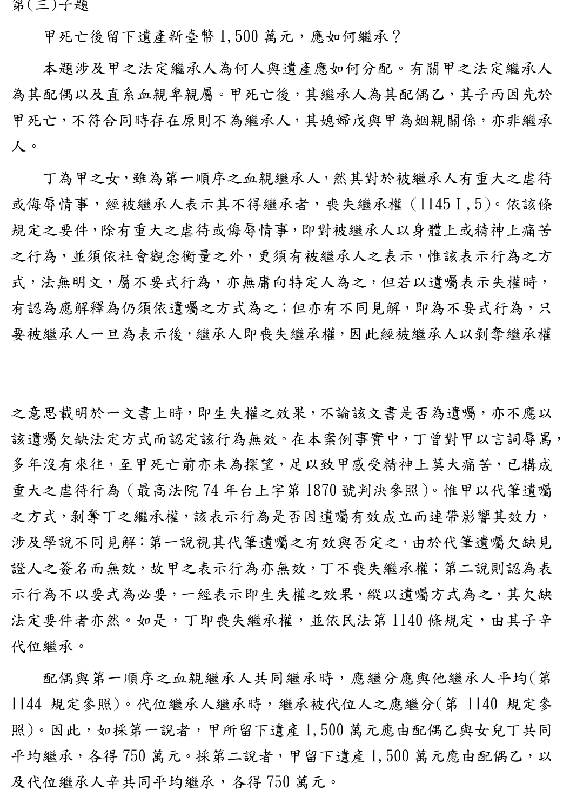
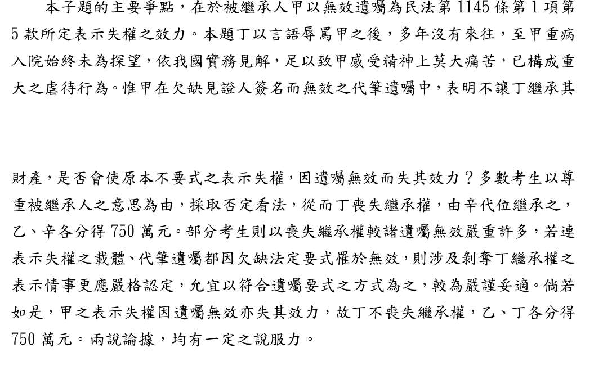

遺囑無效，「不讓女兒繼承」還算數嗎？
114年律師第二試｜民法與民事訴訟法（一）｜第二題第（三）小題（25分）
題目
這一題是親屬繼承題，有三個小題。本頁只做第（三）小題，用得到的事實畫黃色底線。
- （一）丁於辛1歲後與庚分手，而與丙、戊訂立收養契約，單獨將辛出養給丙、戊夫婦，該收養契約是否發生效力？庚得否向法院請求酌定對辛之權利義務行使與負擔？（25分）
- （二）丙因突發心臟病去世，戊仍與甲、乙互相照顧多年，感情深厚。此時甲、乙有意收養戊，雙方訂立書面之收養契約，向法院聲請收養之認可，法院得否為收養認可之裁定？又如甲、乙與戊事先訂立書面之終止姻親關係契約，其結果是否不同？（25分）（本題講義）
- （三）甲因丁與庚交往同居生子一事，始終未能釋懷，在一次大吵當中，丁以言語辱罵甲之後，多年沒有來往，至甲重病入院亦始終未為探望，故甲於代筆遺囑中表明不讓丁繼承其財產，見證人亦聽聞此事。未料，該代筆遺囑因欠缺其中一見證人之簽名而無效。若甲、乙於丙死亡後未收養戊，甲死亡後留下遺產新臺幣1,500萬元，應如何繼承？（25分）本頁只做這一題
影片說明
影片依序示範：讀題、吵架與病房的情境、畫家族圖找繼承人、第1145條的兩個條件、學弟學姊對話說明兩說、74台上1870的發回理由、辛代位繼承、1,500萬元怎麼分、三個易錯點，最後把擬答從頭看一遍。
家族圖：誰能繼承？
丙比甲早死，又沒有小孩，所以沒有人代位丙。戊是媳婦，只是姻親；題目也說甲、乙沒有收養戊。真正的問題只剩丁。
先懂兩個詞
本題的關鍵是第二個條件：甲是在代筆遺囑裡說的，而遺囑少了一位見證人簽名，無效（民法第1194條）。那句話還算不算數？
答題地圖
標號層次：一、→（一）→1.。第一行直接寫結論，不再加題號「（三）」。
考選部評分要點與閱卷委員的話
| 評分要點 | 內容 |
|---|---|
| 1. 繼承人 | 配偶乙。丙先於甲死亡，不符同時存在原則，不為繼承人；媳婦戊與甲為姻親，亦非繼承人。 |
| 2. 重大虐待 | 丁辱罵甲後多年沒有來往，甲死亡前亦未探望，足以使甲感受精神上莫大痛苦，構成重大虐待（引74台上1870）。 |
| 3. 失權表示的效力 | 第一說：視代筆遺囑有效與否，遺囑無效則表示亦無效，丁不喪失繼承權，乙、丁各750萬元。 第二說：表示不以要式為必要，一經表示即生失權效果，丁喪失繼承權，辛依第1140條代位，乙、辛各750萬元。 |

閱卷委員的話：
- 本子題主要爭點，在於被繼承人甲以無效遺囑為第1145條第1項第5款所定表示失權之效力。
- 多數考生以尊重被繼承人意思為由，認為表示不因遺囑無效而失效，丁喪失繼承權，由辛代位，乙、辛各750萬元。
- 部分考生認為剝奪繼承權的表示應更嚴格認定，宜符合遺囑要式，丁不喪失繼承權，乙、丁各750萬元。兩說論據均有一定之說服力。

來源：考選部〈114年司法官、律師考試第二試法律專業科目評分要點及各科目成績統計〉附件第8至11頁，已轉成圖片逐頁核對。
擬答
甲之遺產1,500萬元，應由乙與代位繼承人辛各繼承750萬元。
一、甲之繼承人
甲之配偶乙為繼承人（民法第1138條、第1144條）。丙先於甲死亡且無子女，不為繼承人；戊與甲僅為姻親，未受收養，亦非繼承人。有問題者為丁。
二、丁是否喪失繼承權
（一）重大虐待或侮辱
依民法第1145條第1項第5款，繼承人對被繼承人有重大虐待或侮辱，經被繼承人表示不得繼承者，喪失繼承權。繼承人無正當理由，至父母重病仍不探視，足致其精神上莫大痛苦，屬重大虐待（74台上1870）。丁辱罵甲後多年不往來，甲重病入院亦未探望，已構成之。
（二）無效遺囑中之失權表示
1.代筆遺囑應由見證人全體簽名（第1194條），本件欠缺一人簽名，遺囑無效。
2.有認為甲既以遺囑表示，即應具備遺囑方式，遺囑無效則表示亦無效。
3.惟第1145條未規定表示須以遺囑為之，屬不要式行為；遺囑雖不備法定要件，如確係出於被繼承人之意思，仍有適用失權規定之餘地（74台上1870參照）。甲於立遺囑時明白表示不讓丁繼承，見證人亦聽聞，真意明確，本文採此說，丁喪失繼承權。
三、遺產分配
丁喪失繼承權，依第1140條由其子辛代位繼承丁之應繼分，與配偶乙平均繼承（第1144條第1款），各得750萬元。如採前述反對說，則由乙、丁各得750萬元。
擬答535字（含標題、標點與數字，不含空白，以程式計算）。
字數上限：為什麼是561字
| 項目 | 數字 |
|---|---|
| 本小題可用時間 | 120分鐘 × 25/150 ＝ 20分鐘 |
| 讀題 | 約3分鐘，實際作答約17分鐘 |
| 打字速度 | 一般人中文打字約每分鐘33字（粗估） |
| 上限 | 17分鐘 × 每分鐘約33字 ＝ 561字 |
二是本題重心：先確定重大虐待，再處理「遺囑無效，表示還算不算」，兩說並陳後表明本文。
互動：採哪一說，遺產怎麼分？
兩說的總額分配一樣，都是各750萬元，差在另一半給誰。先自己想想，再點。
為什麼這樣寫
| 寫法 | 理由 |
|---|---|
| 總標題先寫結論 | 閱卷者第一眼就知道答案：乙、辛各750萬元。 |
| 一、先排除丙、戊 | 評分要點第一段。用一句話帶過，把字數留給爭點。 |
| 二（一）先確定重大虐待 | 第5款有兩個條件；先處理第一個，再進入真正的爭點。 |
| 二（二）兩說並陳 | 評分要點把兩說並列，閱卷委員也說兩說都有說服力。 |
| 本文採第二說 | 條文未規定表示方式；74台上1870的發回理由也指出，遺囑不備法定要件，如確出於本人意思，仍有適用的餘地。多數考生也採此說。採第一說也可以，理由寫清楚即可。本頁取捨 |
| 三、兩說的分配都寫 | 只差一句，但能讓閱卷者看到你知道反對說的結果。 |
實務見解
| 字號 | 重點 | 怎麼用 |
|---|---|---|
| 最高法院74年度台上字第1870號民事判決（74年8月26日，廢棄發回；原為判例，效力同一般最高法院判決） | 1. 父母終年臥病，繼承人無正當理由至死不探視，足致精神上莫大痛苦，屬重大虐待。 2. 發回理由：第1145條第1項第5款「並未規定應以遺囑之方式為之」，遺囑「縱不備成遺囑之法定要件，但如確係出於〔被繼承人〕表示之意思者」，是否無該規定之適用，「亦有斟酌之餘地」。 | 兩個條件都用得到。第2點是發回更審的理由，不是終局認定該案當事人已喪失繼承權，擬答寫「參照」。 |
| 臺灣高等法院111年度重家上字第109號民事判決（112年6月21日） | 失權表示為不要式行為，不限於以遺囑為之；被繼承人於立遺囑過程中已明確口述不得繼承，縱遺囑欠缺其他法定要件而不生遺囑效力，亦無礙剝奪繼承權之意思表示效力。 | 事實和本題接近，可當補充。上訴後，最高法院112年度台上字第2319號以上訴不合法裁定駁回，屬程序駁回，不是最高法院實體肯認此說。 |
兩件都在司法院系統開全文核對（2026-11-13）。〔〕內為本頁改寫，原文為當事人姓名。另有最高法院72年度台上字第4710號判決常被引用「除以遺囑為之者外，為不要式行為」一語，該句字面較接近第一說，但原案另有口頭表示，本頁擬答未引用。
預想易錯點
以下是批改前預想的錯誤，還不是學生實際作答的統計。集體批改後，會改成「常見錯誤」並註明人數。
| 可能的錯誤 | 應該怎麼寫 |
|---|---|
| 丁喪失繼承權後，寫「乙單獨繼承1,500萬元」 | 忘了辛。喪失繼承權也適用代位繼承（第1140條），辛繼承丁那一份。 |
| 把媳婦戊列為繼承人 | 戊與甲是姻親，不是血親；題目也說沒有收養。 |
| 只寫「丁不孝，喪失繼承權」 | 第5款要兩個條件；第二個條件「表示」出現在無效遺囑裡，這才是本題的爭點。 |
| 寫「遺囑無效，所以一切無效」，沒有討論 | 可以採第一說，但要先說明有爭議，再說理由。 |
| 第一行寫題號「（三）」，第二層又寫（一） | 第一行直接寫結論；層次是一、→（一）→1.。 |
延伸思考
參考資料
歡迎指正
相關連結
民法講義總覽 同一題第（二）小題：公婆想收養媳婦，法院會准嗎？ 誰繼承、分多少？（第1138條至第1144條） 同一份考卷第一題（一）：被騙買地，能用第184條第1項前段請求賠償嗎？ GitHub 原始檔